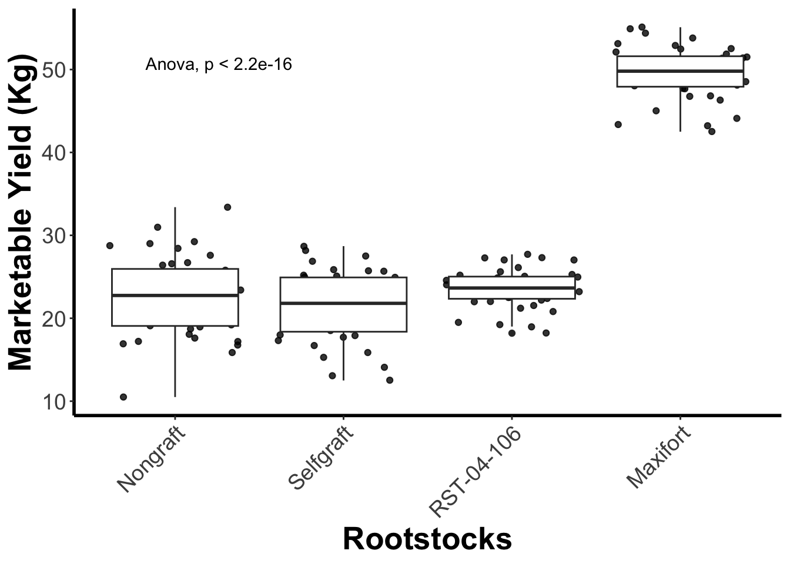

Statistical Analyses
Author: Ravin Poudel
Updated: 2024-06-01
Descriptive and Inferential Statistics
We’ll cover descriptive and inferential statistics, offering a high-level view of data.
Descriptive statistics organize and summarize data, answering questions like “Where is the center and what is the spread of measurements?”
Inferential statistics draw conclusions about a population from a sample, assessing reliability. For instance, “Are apples the same as oranges?” or “Given differences between measurements, how likely is it that apples and oranges differ?” Inferential stats use probability theory to generalize findings. R provides various methods for both conventional and advanced approaches to statistical analysis.
Data Display and Characterization
library(dplyr)
meta_df <- read.csv("input_data/tomato_grafting_metadata.csv", header = TRUE)
yield_df <- read.csv("input_data/tomato_grafting_yield_spad.csv", header = TRUE)
# merge metadata with yield data
yield_with_meata_df <- merge(yield_df, meta_df, by="plantID")
pie(table(yield_with_meata_df$rootstock))pie(table(yield_with_meata_df$sampling_date))
hist(yield_with_meata_df$spad_value)
hist(yield_with_meata_df$marketable_yield_kg)
plot(yield_with_meata_df$marketable_yield_kg,type="p",main="marketable_yield_kg",ylab="Yiled ~ Kg")
plot(yield_with_meata_df$spad_value, type ="p",main="SPAD",ylab="SPAD")Mean
mean(yield_with_meata_df$marketable_yield_kg);## [1] 29.25562Median
median(yield_with_meata_df$marketable_yield_kg)## [1] 24.65SD
sd(yield_with_meata_df$marketable_yield_kg, na.rm = TRUE) ## [1] 12.35358MAD
mad(yield_with_meata_df$marketable_yield_kg, na.rm = TRUE) ## [1] 6.22692Note that sd() and mad() (like many other functions) have optional parameter na.rm; when it set to T it instructs the function to discard all NA’s from the input vector and apply the computations to the remaining data.
Other useful characteristics are:
Range is simply the min-to-max range of all observed values in the data.
range(yield_with_meata_df$marketable_yield_kg,na.rm=T) # range of all observed values, min to max## [1] 10.5 55.1Interquartile range(IQR) is yet another robust
characteristic of the data defined similarly to a median. Namely, just
like the median is the midpoint of the data, we can also define a lower
quartile (Q1) as a value such that 25% of the observed data values are
below Q1. Similarly, the upper quartile (Q3) is such a value that only
25% of the observed values are above (Q3), and the rest is below Q3.
Interquartile distance is then defined as IQR=Q3-Q1.
IQR(yield_with_meata_df$marketable_yield_kg,na.rm=T) # interquartile distance## [1] 14.5Box Plot fivenum
To conclude this section, let us examine another extremely useful visualization of the distribution of the data values, a box-and-whisker plot (or simply a “boxplot”). Boxplot is based on the “5-number” summary of the observed data: (Min, lower quartile, median, upper quartile, max).
fivenum(yield_with_meata_df$marketable_yield_kg, na.rm = TRUE) ## [1] 10.50 21.15 24.65 37.95 55.10Here, fivenum provides:
- First value ~ Minimum : 10.50
- Second value ~ Q1 : 21.15
- Third value ~ Q2/median : 24.65
- Fourth value ~ Q3 : 37.95
- Fifth value ~ Maximum : 55.10
In the boxplot, the box is drawn from lower to upper quartile (i.e. the height of the box is equal to IQR, 50% of the observed values are within the box), the median of the data is marked with a line inside the box, and the whiskers show the tails of the distribution of the data: lower whisker is drawn to Lower quartile – 1.5 IQR or to the Min, whichever is greater, and the upper whisker extends to Upper quartile + 1.5 IQR or to the Max, whichever is less. Data points that fall outside of the whiskers (i.e. those that are located far from the center and are likely outliers and/or very long tails of the distribution) are drawn, if present, as individual dots. The commands and the resulting plots are shown below.

# Create a boxplot for the 'marketable_yield_kg' column in 'yield_with_meata_df' dataframe
boxplot(yield_with_meata_df$marketable_yield_kg, na.rm = TRUE, horizontal = TRUE)
Statistical Analysis
ANOVA (Analysis of Variance Model) is often used when there are more than two groups to compare, and it helps determine whether there are statistically significant differences among the means of these groups.
Which rootstock shows better results? Is there a treatment effect in the mean yield across the rootstocks?
# how to run the ANOCA in R
help(aov)The ANOVA test will evaluate whether there are significant
differences in the mean marketable_yield_kg across
different levels of the rootstock variable. If the p-value
associated with the rootstock variable is below a certain
significance level (e.g., 0.05), we would reject the null hypothesis,
concluding that there are significant differences in
marketable_yield_kg between at least two levels of the
rootstock variable.
In the code
aov(formula = marketable_yield_kg ~ rootstock, data = yield_with_meata_df),
we are conducting an Analysis of Variance (ANOVA) to explore the
relationship between the marketable_yield_kg variable
(dependent variable) and the rootstock variable
(independent variable) using the data stored in the
yield_with_meata_df dataframe.
Let’s break down the components:
aov(): This function in R stands for “Analysis of Variance.” It is used to perform ANOVA, which is a statistical method used to analyze the differences among group means in a sample.formula = marketable_yield_kg ~ rootstock: This part defines the formula for the ANOVA. It specifies thatmarketable_yield_kgis the dependent variable, androotstockis the independent variable. The~symbol separates the dependent variable from the independent variable.data = yield_with_meata_df: This specifies the dataframeyield_with_meata_dffrom which the variables are taken. It tells R where to find the variables specified in the formula.
m1_yield_avo <- aov(formula=marketable_yield_kg ~ rootstock, data=yield_with_meata_df) Let’s check the ‘Value’ section of the help page so we know what does it return. It returns an object, which can further be explored with print() and summary(). Let’s assign it to an object so that we can use print() and summary() on it.
summary(m1_yield_avo)## Df Sum Sq Mean Sq F value Pr(>F)
## rootstock 3 22063 7354 521 <2e-16 ***
## Residuals 156 2202 14
## ---
## Signif. codes: 0 '***' 0.001 '**' 0.01 '*' 0.05 '.' 0.1 ' ' 1What is in the summary of the model?
The ANOVA results indicate the statistical significance of the
rootstock variable in explaining the variation in the
marketable_yield_kg variable. Let’s interpret the key
components:
Df (Degrees of Freedom): This column displays the degrees of freedom associated with the
rootstockvariable and the residuals. In this case, there are 3 degrees of freedom forrootstockand 156 degrees of freedom for residuals.Sum Sq (Sum of Squares): This column shows the sum of squared deviations from the mean for
rootstockand residuals. Forrootstock, the sum of squares is 23478, while for residuals, it is 138.Mean Sq (Mean Square): This is the mean square, calculated by dividing the sum of squares by the degrees of freedom. For
rootstock, it is 7826 (23478 divided by 3), while for residuals, it is 1 (138 divided by 156).F value: This is the F-statistic, which is the ratio of the mean square for
rootstockto the mean square for residuals. It is used to test the null hypothesis that all group means are equal. Here, the F value is 8826.Pr(>F): This is the p-value associated with the F-statistic. It represents the probability of observing an F-statistic as extreme as, or more extreme than, the one computed from the sample data, assuming the null hypothesis (no effect of
rootstock) is true. In this case, the p-value is less than 2e-16 (a very small number close to zero), indicating strong evidence against the null hypothesis.
Overall, the results suggested that the rootstock
variable has a statistically significant effect on the
marketable_yield_kg variable. The extremely low p-value
indicates that the observed differences in mean
marketable_yield_kg among different levels of
rootstock are highly unlikely to be due to random
chance.
Which treatments are different???
Now that we know that differences exist between our treatments, how can we find which treatments are different? We can do this by using Tukey’s post-hoc test. If you scroll down the help page of aov and go the section ‘See Also’, you will see a function TukeyHSD. This is what we need.
TukeyHSD(m1_yield_avo) ## Tukey multiple comparisons of means
## 95% family-wise confidence level
##
## Fit: aov(formula = marketable_yield_kg ~ rootstock, data = yield_with_meata_df)
##
## $rootstock
## diff lwr upr p adj
## Nongraft-Maxifort -26.9325 -29.114179 -24.75082061 0.0000000
## RST-04-106-Maxifort -25.9900 -28.171679 -23.80832061 0.0000000
## Selfgraft-Maxifort -28.2450 -30.426679 -26.06332061 0.0000000
## RST-04-106-Nongraft 0.9425 -1.239179 3.12417939 0.6766024
## Selfgraft-Nongraft -1.3125 -3.494179 0.86917939 0.4031948
## Selfgraft-RST-04-106 -2.2550 -4.436679 -0.07332061 0.0398197After you conduct an ANOVA and find a significant difference between the groups, Tukey’s HSD test allows you to determine which specific pairs of group means are significantly different from each other. It calculates confidence intervals for all pairwise differences between group means and then compares these intervals to determine which differences are statistically significant.
Challenge
Can you run the ANOVA test using SPAD value as response? Do we see the similar pattern?ANSWER
# build the anova model
m2_spad_avo <- aov(formula=spad_value ~ rootstock, data=yield_with_meata_df)
# get the summary of the model
summary(m2_spad_avo)
# TukeyHSD
TukeyHSD(m2_spad_avo) How to get the figure with comparing means with statistical significance added?
Let get the boxplot comparing means by rootstocks, then add the level
of signifance to the same plot. For doing this we will be ggplot2 and
additional R package ggpubr:
library(ggplot2)
library(ggpubr)
# change the order of the barplor
yield_with_meata_df$rootstock <- factor(yield_with_meata_df$rootstock, levels = c("Nongraft","Selfgraft","RST-04-106","Maxifort"))
# get the plot
gg_yiled_boxplot <- yield_with_meata_df %>%
ggplot(mapping = aes(x = rootstock, y = marketable_yield_kg)) +
geom_jitter(alpha = 0.8) +
geom_boxplot() +
labs(x="Rootstocks", y="Marketable Yield (Kg)") +
theme_classic() +
theme(panel.grid = element_blank(),
axis.line = element_line(linewidth = 1),
axis.title = element_text(size = 20, face = "bold"),
axis.text.x = element_text(size = 14, angle = 45, vjust = 1, hjust = 1),
axis.text.y = element_text(size = 14))
# add stat comparision part
gg_yiled_boxplot + stat_compare_means(method = "anova", label.y = 50)
## Define the pairwise comparison - one that is more meaningful.
my_comparisons <- list(
c("Nongraft", "Maxifort"),
c("Selfgraft", "Maxifort"),
c("RST-04-106", "Maxifort"),
c("Nongraft", "Selfgraft"),
c("Nongraft", "RST-04-106"),
c("Selfgraft", "RST-04-106"))
## add the compariopns to the the plot
gg_yiled_boxplot_with_pairwise_test <- gg_yiled_boxplot +
stat_compare_means(comparisons = my_comparisons, label = "p.signif", method = "t.test")
gg_yiled_boxplot_with_pairwise_test# Save the plot in the `output`folder
ggsave("output/figures/gg_yiled_boxplot_with_pairwise_test.pdf", height = 6, width = 8)